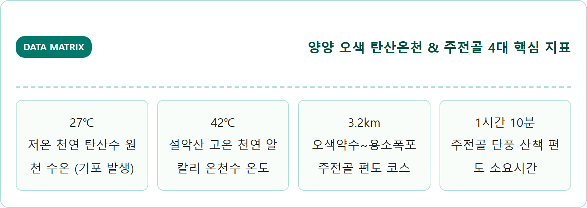
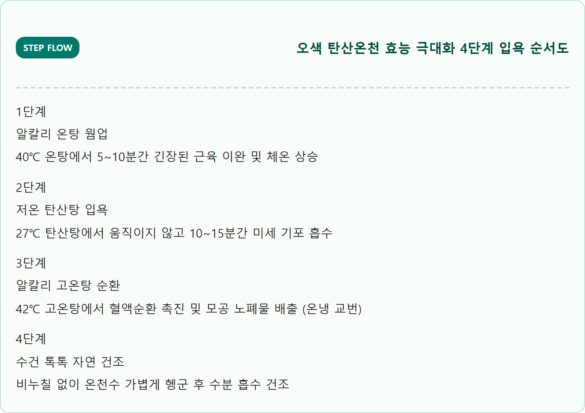
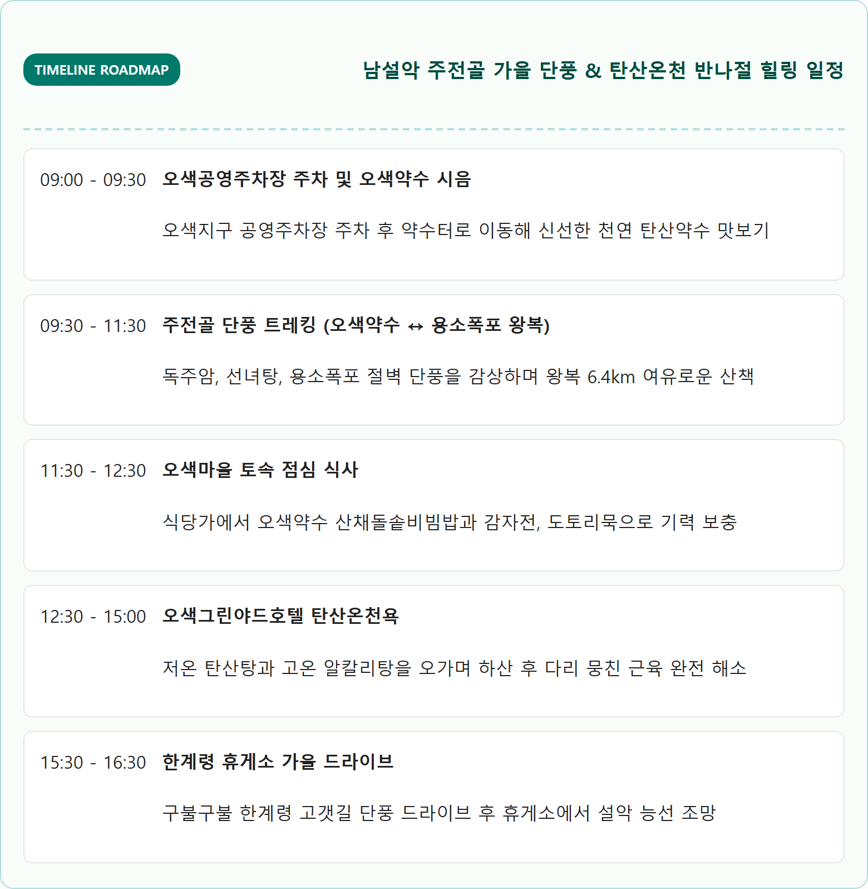
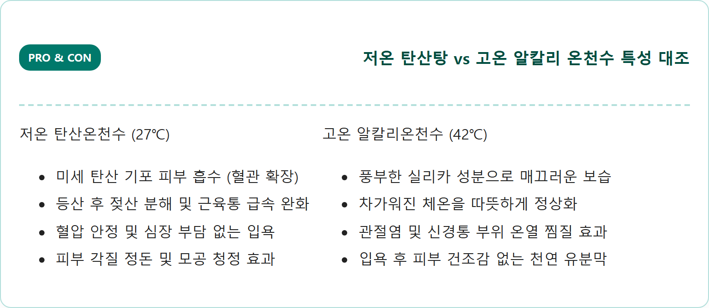
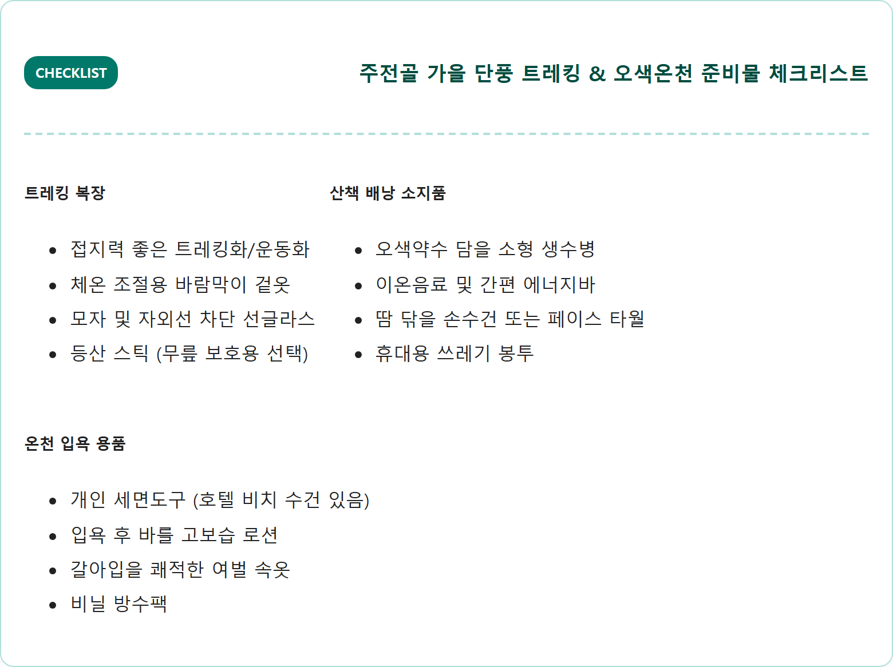
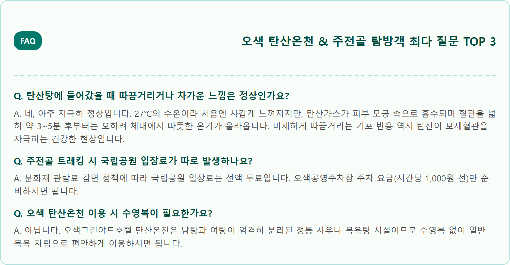

A breathtaking, photorealistic eye-level landscape photograph showcasing the autumn foliage of Jujeongol Valley in Mount Seoraksan, Yangyang, South Korea, alongside steaming mineral thermal waters. Towering dramatic granite cliffs and rocky gorges enveloped by vibrant scarlet maples, fiery orange oaks, and bright golden birches under a crystal clear blue autumn sky. A gentle crystal-clear mountain stream cascading through smooth river boulders. Warm, ambient steam rising from a nearby outdoor hot spring pool edge. Warm autumn sunlight, rich seasonal colors, ultra-high resolution, authentic Korean national park scenery, 1:1 aspect ratio.

| 구분 | 현장 정상가 | 네이버 사전 예매가 | 투숙객 / 조조(06~08시) | 비고 |
|---|---|---|---|---|
| 탄산온천 대인 (중학생 이상) | 16,000원 | 13,000원 (약 19% 할인) | 11,000원 ~ 12,000원 | 탄산탕 + 알칼리탕 + 사우나 전 시설 |
| 탄산온천 소인 (초등학생 이하) | 10,000원 | 8,500원 | 8,000원 | 36개월 미만 영유아 무료 |
| 온천 + 암반파동욕장 패키지 | 25,000원 | 21,000원 | 19,000원 | 원적외선 파동욕 찜질복 포함 |





단풍이 절정을 이루는 주말에는 오전 8시 30분 이전에 오색주차장에 도착해야 만차 대기 없이 바로 주차할 수 있습니다.
트레킹 전 오색그린야드호텔 로비나 네이버 예매로 탄산온천 모바일 티켓을 사전 발권해두면 하산 후 대기 없이 바코드 태그로 즉시 입장 가능합니다.